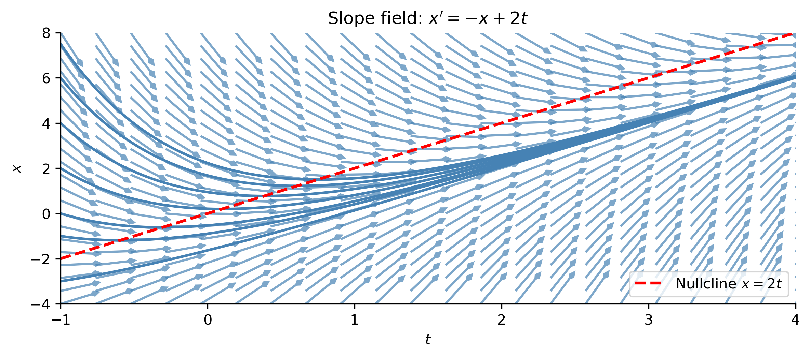
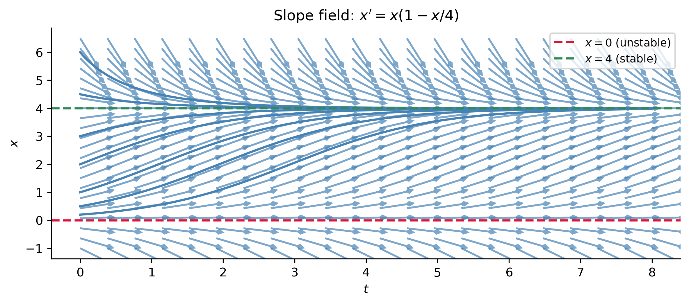
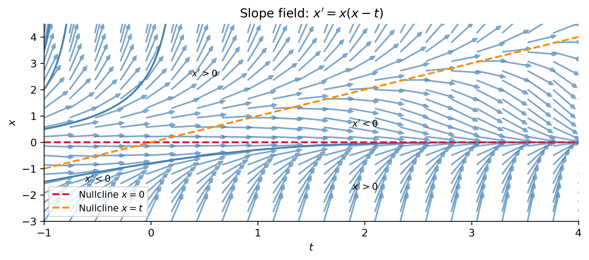
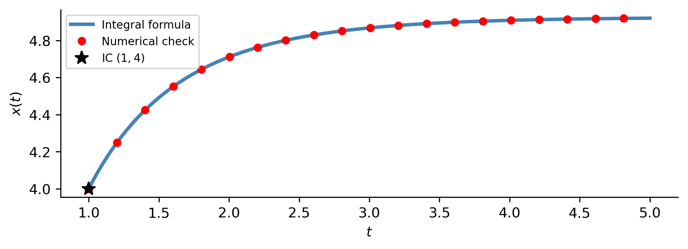
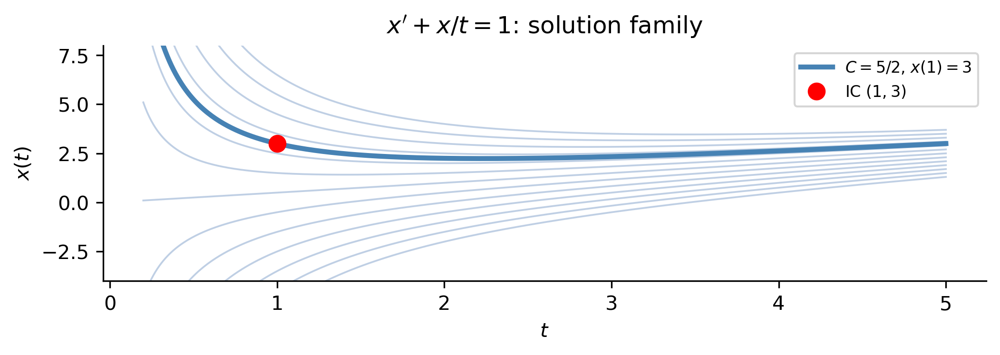
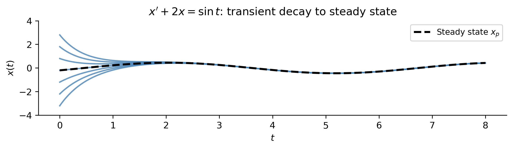
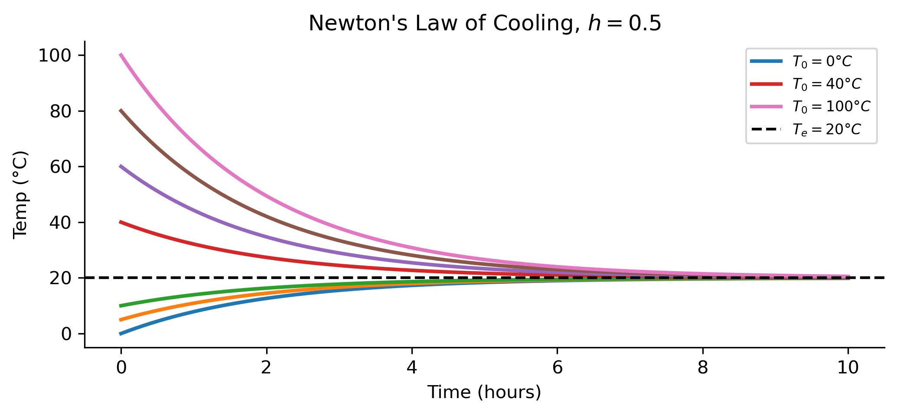
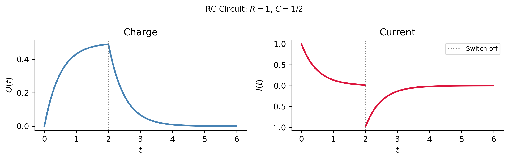
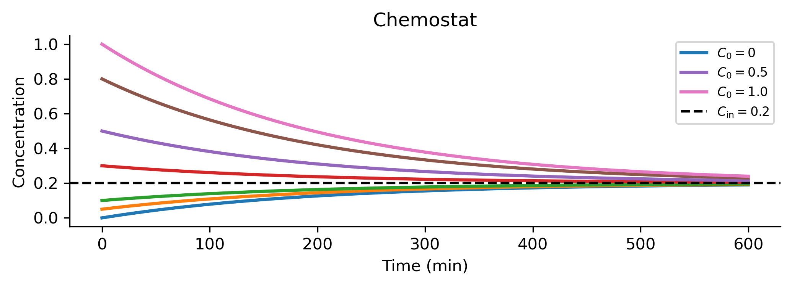

def slope_field(f, t_range, x_range, n=20, ax=None, color='steelblue', alpha=0.7):
"""Draw slope field for x' = f(t,x) using normalized quiver arrows."""
if ax is None:
fig, ax = plt.subplots()
T, X = np.meshgrid(np.linspace(*t_range, n), np.linspace(*x_range, n))
dT, dX = np.ones_like(T), f(T, X)
norm = np.sqrt(dT**2 + dX**2); norm[norm == 0] = 1
ax.quiver(T, X, dT/norm, dX/norm, angles='xy', scale=n*0.8,
width=0.003, color=color, alpha=alpha, headlength=3, headwidth=3)
ax.set_xlabel('$t$'); ax.set_ylabel('$x$')
return axFirst-Order Equations
MATH 341 — Notes 2
University of Scranton
2026-05-30
Goals
What We Will Cover
Slope fields — the geometric interpretation of a first-order ODE
Nullclines and isoclines — reading qualitative behavior without solving
Separation of variables — solving separable first-order ODEs
Integrating factors — solving first-order linear ODEs
Applications — Newton’s cooling, RC circuits, chemical reactors
Note
Sections 1.1.3, 1.3, and 1.4 of Logan (2015).
Slope Fields
The Geometric Idea
For a first-order ODE \(x' = f(t, x)\), at every point \((t, x)\) in the plane the ODE prescribes the slope that any solution curve through that point must have.
A slope field (direction field) is the picture formed by drawing a short line segment with slope \(f(t,x)\) at each point of a grid.
Important
A slope field visualizes the ODE before any solution is found. Solution curves are everywhere tangent to the field.
Calculus vs. Differential Equations
| Given | Find | |
|---|---|---|
| Calculus | function \(x(t)\) | slopes \(x'(t)\) |
| Diff. Eq. | slopes \(f(t,x)\) | function \(x(t)\) |
Nullclines and Isoclines
Nullclines — where \(f(t,x) = 0\), i.e., where the slope field is horizontal.
- Solutions have zero slope on a nullcline and may change from increasing to decreasing across it.
- For an autonomous ODE \(x'=f(x)\): nullclines are horizontal lines \(x=c\) where \(f(c)=0\), which are exactly the equilibrium solutions.
Isoclines — where \(f(t,x) = k\) for a fixed constant \(k\).
- Along an isocline every solution curve has slope \(k\).
- Sketching several isoclines gives a rapid picture of the slope field’s organization.
Tip
For an autonomous ODE \(x'=f(x)\): the slope is constant along every horizontal line \(x=c\), making the slope field especially easy to read.
Python: The slope_field Helper
Key ideas: - np.meshgrid creates the \((t,x)\) grid - dX = f(T, X) evaluates the slope at every grid point - Arrows are normalized to equal length so large slopes don’t dominate
Example 1 — \(x' = -x + 2t\)
Non-autonomous linear ODE (Logan Example 1.5)
- Nullcline: \(f=0 \Rightarrow x = 2t\) (slope-2 line)
- Above nullcline: \(f < 0\), slopes negative
- Below nullcline: \(f > 0\), slopes positive

Example 2 — Autonomous: \(x' = x(1 - x/4)\)
Equilibria at \(x=0\) (unstable) and \(x=4\) (stable). Slope is constant on horizontal lines.

Tip
Sign of \(f(x)\): solutions increase where \(f>0\), decrease where \(f<0\). This is the foundation of phase-line analysis.
Example 3 — Nonlinear: \(x' = x(x-t)\)
Two nullclines: \(x=0\) (equilibrium solution) and \(x=t\) (not a solution).

Separable Equations
Definition and Recipe
An ODE is separable if it factors as \[x' = f(x)\,g(t).\]
Separation of variables: divide by \(f(x)\), then integrate both sides:
\[\frac{1}{f(x)}\,dx = g(t)\,dt \quad\Longrightarrow\quad \int\frac{1}{f(x)}\,dx = \int g(t)\,dt + C.\]
Recipe
Write \(\dfrac{1}{f(x)}\,dx = g(t)\,dt\) and integrate directly. The result is a one-parameter family of integral curves \(\phi(t,x)=C\).
IVP Definite-Integral Form
\[\int_{x_0}^{x}\frac{1}{f(y)}\,dy = \int_{t_0}^{t} g(s)\,ds\] No constant needed — the initial condition is already built in.
Example 4 — Exponential Growth/Decay
\[\frac{dx}{dt} = rx, \quad r \text{ constant}\]
Separate: \(\dfrac{1}{x}\,dx = r\,dt\)
Integrate: \(\ln|x| = rt + C \;\Rightarrow\; \boxed{x(t) = Ce^{rt}}\)
With \(x(0)=x_0\): \(x(t) = x_0 e^{rt}\).
Example 5 — The Logistic Equation
\[\frac{dx}{dt} = rx\!\left(1-\frac{x}{K}\right), \quad x(0)=x_0\]
Partial fractions: \(\dfrac{1}{x(K-x)} = \dfrac{1/K}{x}+\dfrac{1/K}{K-x}\)
Integrate: \[\frac{1}{K}\ln\!\left|\frac{x}{K-x}\right| = \frac{r}{K}t + C_1 \;\Rightarrow\; \frac{x}{K-x} = Ce^{rt}\]
Solve and apply IC: \[\boxed{x(t) = \frac{K}{1+\!\left(\dfrac{K}{x_0}-1\right)e^{-rt}}}\]
Show code
\(\displaystyle x{\left(t \right)} = - \frac{K x_{0} e^{r t}}{\left(K - x_{0}\right) \left(- \frac{x_{0} e^{r t}}{K - x_{0}} - 1\right)}\)
Example 6 — Non-Elementary Integral
\[\frac{dx}{dt} = \frac{2\sqrt{x}\,e^{-t}}{t}, \quad x(1)=4 \qquad \text{(Logan Ex. 1.18)}\]
Separate and integrate (definite form): \[\int_4^x \frac{dy}{2\sqrt{y}} = \int_1^t \frac{e^{-s}}{s}\,ds \;\Rightarrow\; \sqrt{x}-2 = \int_1^t\frac{e^{-s}}{s}\,ds\]
Right-hand side has no elementary form — but can be plotted numerically: \[x(t) = \left(\int_1^t\frac{e^{-s}}{s}\,ds + 2\right)^{\!2}\]

Singular Solutions
Separating variables requires dividing by \(f(x)\) — only valid when \(f(x) \neq 0\).
Any root \(f(c)=0\) gives a constant solution \(x(t)\equiv c\) that may not appear in the general family for any value of \(C\). Such a solution is called a singular solution.
Example 7
The ODE \(x' = 6t(x-1)^{2/3}\) has general solution \(x(t) = 1+(t^2+C)^3\).
But \(x(t)\equiv 1\) also satisfies the ODE: \(\;x'=0\;\) and \(\;6t(1-1)^{2/3}=0\). ✓
No choice of \(C\) recovers \(x=1\) from the general family — it is a singular solution.
Tip
Always check whether setting \(f(x)=0\) produces additional constant solutions when using separation of variables.
Linear Equations
Normal Form and Integrating Factor
A first-order linear ODE in normal form: \[x' + p(t)\,x = q(t)\]
- \(q(t)\equiv 0\): homogeneous; otherwise inhomogeneous
- \(q(t)\) is called the forcing term or source term
Key trick: multiply by the integrating factor \(\mu(t) = e^{P(t)}\), where \(P(t)=\int p(t)\,dt\):
\[\mu(t)\bigl(x' + p(t)x\bigr) = \bigl(\mu(t)\,x\bigr)'\]
So the ODE becomes \(\bigl(\mu x\bigr)' = \mu\,q(t)\) — a total derivative on the left. Integrate and divide by \(\mu\):
\[\boxed{x(t) = e^{-P(t)}\int e^{P(t)}\,q(t)\,dt + Ce^{-P(t)}}\]
Four-Step Procedure
Algorithm
Step 1. Write the ODE in normal form: \(x' + p(t)x = q(t)\).
Step 2. Compute the integrating factor: \(\mu(t) = e^{\int p(t)\,dt}\).
Step 3. Multiply through: \(\bigl(\mu x\bigr)' = \mu\,q(t)\).
Step 4. Integrate both sides, divide by \(\mu\), apply the IC.
Structure Theorem
The general solution splits as \(x(t) = x_h(t) + x_p(t)\):
| Part | Formula | Role |
|---|---|---|
| Homogeneous (transient) | \(x_h = Ce^{-P(t)}\) | carries IC; decays if \(P\to\infty\) |
| Particular (steady state) | \(x_p = e^{-P(t)}\int q(t)e^{P(t)}dt\) | driven by forcing \(q(t)\) |
Example 8 — \(x' + \tfrac{1}{t}x = 1\)
\(p(t)=1/t\), \(\;q(t)=1\)
Step 2. \(\mu = e^{\int(1/t)dt} = e^{\ln t} = t\)
Step 3. \((tx)' = t\)
Step 4. \(tx = \tfrac{1}{2}t^2 + C \;\Rightarrow\; x(t) = \dfrac{t}{2} + \dfrac{C}{t}\)
With \(x(1)=3\): \(\;\tfrac{1}{2}+C=3 \;\Rightarrow\; C=\tfrac{5}{2}\), so \(\;x(t)=\dfrac{t}{2}+\dfrac{5}{2t}\).

Example 9 — \(x' + 2x = \sin t\)
\(p(t)=2\), \(\;q(t)=\sin t\)
Integrating factor: \(\mu = e^{2t}\)
\((xe^{2t})' = e^{2t}\sin t\)
Integrate by parts: \[\int e^{2t}\sin t\,dt = e^{2t}\!\left(\tfrac{2}{5}\sin t - \tfrac{1}{5}\cos t\right) + C\]
General solution: \[x(t) = \underbrace{\frac{2}{5}\sin t - \frac{1}{5}\cos t}_{x_p \;\text{(steady state)}} + \underbrace{Ce^{-2t}}_{x_h \;\text{(transient)}}\]

Applications
Three Applications of First-Order Linear ODEs
All three applications below share the same mathematical structure:
\[x' + p\,x = q(t) \quad\Longrightarrow\quad x(t) = x_{\infty} + (x_0 - x_{\infty})\,e^{-pt}\]
- 🌡️ Newton’s Law of Cooling — \(T' + hT = hT_e\)
- ⚡ RC Circuit — \(Q' + \tfrac{1}{RC}Q = \tfrac{E(t)}{R}\)
- 🧪 Chemical Reactor (Chemostat) — \(C' + \tfrac{q}{V}C = \tfrac{q}{V}C_{\text{in}}\)
Newton’s Law of Cooling
Derivation and Solution
Newton’s law of cooling: rate of temperature change is proportional to the temperature difference with the environment: \[\frac{dT}{dt} = -h(T - T_e), \quad T(0)=T_0, \quad h>0\]
In normal form: \(T' + hT = hT_e\)
Integrating factor: \(\mu = e^{ht}\)
\((Te^{ht})' = hT_e e^{ht}\)
\[\boxed{T(t) = T_e + (T_0 - T_e)\,e^{-ht}}\]
As \(t\to\infty\): \(T(t)\to T_e\) — stable equilibrium at ambient temperature.
Cooling Curves and Forensics

Forensic Application
A body at \(37°C\) found in a \(20°C\) room: two temperature readings at known times determine \(h\), then the equation \(T(t_{\text{death}}) = 37°C\) recovers the time of death.
Variable Ambient Temperature
If the environment is not constant but \(Q(t)\), the ODE becomes: \[T' + hT = hQ(t)\]
General solution via integrating factor: \[T(t) = Ce^{-ht} + e^{-ht}\int_0^t hQ(s)\,e^{hs}\,ds\]
This integral form arises whenever the forcing is time-varying — the same structure appears in circuits and reactors.
The RC Circuit
Governing ODE
An RC circuit with resistance \(R\), capacitance \(C\), and voltage source \(E(t)\):
\[R\,Q' + \frac{Q}{C} = E(t) \quad\Longrightarrow\quad Q' + \frac{1}{RC}\,Q = \frac{E(t)}{R}\]
Integrating factor \(\mu = e^{t/(RC)}\) gives: \[Q(t) = e^{-t/(RC)}\int_0^t \frac{E(s)}{R}\,e^{s/(RC)}\,ds + Q_0\,e^{-t/(RC)}\]
Time constant \(\tau = RC\):
| \(\tau\) small | \(\tau\) large |
|---|---|
| Fast charge/discharge | Slow charge/discharge |
Current: \(I(t) = Q'(t)\)
Piecewise Forcing (Logan Ex. 1.29)
\(R=1\), \(C=1/2\) (\(\tau=1/2\)), \(Q(0)=0\), \(E(t) = 1\) for \(0\leq t<2\), else \(0\).
Piece-by-piece with matching at \(t=2\):
\[Q_1(t) = \tfrac{1}{2}(1-e^{-2t}), \quad 0\leq t<2\] \[Q_2(t) = \tfrac{1}{2}(1-e^{-4})\,e^{-2(t-2)}, \quad t\geq 2\]

Mechanical–Electrical Analogy
The RC and Newton’s cooling equations are mathematically identical:
| Newton’s Cooling | RC Circuit |
|---|---|
| \(T' + hT = hT_e(t)\) | \(Q' + \tfrac{1}{RC}Q = \tfrac{E(t)}{R}\) |
| Temperature \(T\) | Charge \(Q\) |
| Heat loss coeff. \(h\) | \(1/(RC)\) |
| Ambient temp. \(T_e(t)\) | \(E(t)/R\) |
Tip
The same transient + steady-state structure governs both. Understanding one system gives insight into the other — a powerful example of mathematical unification.
Chemical Reactor
The Chemostat Model
A well-mixed tank of volume \(V\): chemical at concentration \(C(t)\), inflow \(C_{\text{in}}\) at rate \(q\), outflow at same rate.
Mass balance (rate in \(-\) rate out): \[V\,C' = q\,C_{\text{in}} - q\,C \;\Rightarrow\; C' + \frac{q}{V}\,C = \frac{q}{V}\,C_{\text{in}}\]
With \(C(0)=C_0\): \[\boxed{C(t) = C_{\text{in}} + (C_0 - C_{\text{in}})\,e^{-qt/V}}\]
As \(t\to\infty\): \(C(t)\to C_{\text{in}}\) — stable equilibrium at inflow concentration.

Summary
Key Takeaways
A slope field visualizes \(x'=f(t,x)\) geometrically. Nullclines (\(f=0\)) and isoclines (\(f=k\)) organize the field and identify equilibria.
An ODE is separable if \(x' = f(x)g(t)\). Write \(\frac{dx}{f(x)} = g(t)\,dt\) and integrate. Watch for singular solutions at roots of \(f\).
A first-order linear ODE \(x'+p(t)x=q(t)\) is solved by the integrating factor \(\mu=e^{\int p\,dt}\). The solution always decomposes as transient (\(x_h\)) + steady state (\(x_p\)).
Newton’s cooling, RC circuits, and chemostats are all governed by the same first-order linear ODE — same structure, same solution formula, different physical interpretations.
Note
Next: One-dimensional dynamical systems, equilibria and stability — Logan §1.5.
References
Logan, J David. 2015. A First Course in Differential Equations Third Edition.

MATH 341 Differential Equations — Notes 2